Computer Science 1060
Scientific Programming
Assignment 01 - Scalars, Operators, and Precedence
Contents:
Overview
Topic: Use of scalars and operator precedence
Related Reading: Ch. 1 as well as lecture notes
Please make sure you adhere to the policies on academic integrity.
Problems to be Submitted (20 points)
You are to submit a single m-file that outputs the resulting
assignments for each of the following problems, in the given order.
Please make sure that your name is given in comments at the beginning
of the m-file and ensure that no output is generated by your scripts
other than the resulting answers.
Submit your m-file to the email address dferry_submit@slu.edu.
- Problem A)
- Calculate and display the variable
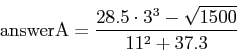
- Problem B)
- Calculate and display the variable
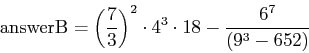
- Problem C)
- Set the variable 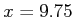 and then calculate and display
- Problem D)
- The number of ways of choosing 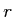 objects out of a set of
 objects can be computed as
objects can be computed as
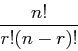
where 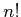 can be computed as factorial(n) in MATLAB.
Set the variables
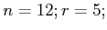 and then compute and display
- Problem E)
- An earthquake with magnitude on the Richter scale releases
energy (in Joules) according to the formula,
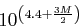
Calculate and display the variable
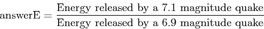
- Problem F)
- The formula for annually compounding interest is
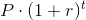
where P is equal to the principal (original investment), r is the rate of
interest, and t is the time of investment in years. Assign the variables
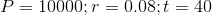
to represent a 25 year old college graduate making a $10,000 investment
that grows at a rate of 8% over 40 years (until retirement at the age of 65).
Consider also the assignment
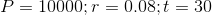
that represents the same individual waiting ten years to make the same investment.
Then compute and display
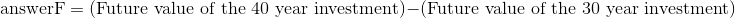
- Problem G)
- The distance 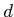 from a point 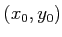 to a line
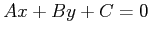 is given by
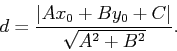
Set the variables
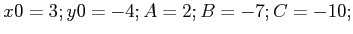 and then
calculate and display
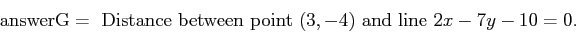
Note: you may use built-in functions sqrt and abs.
Originally by
Michael Goldwasser